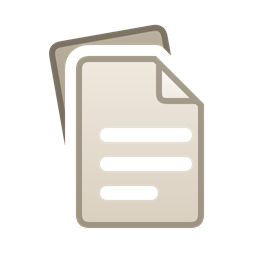
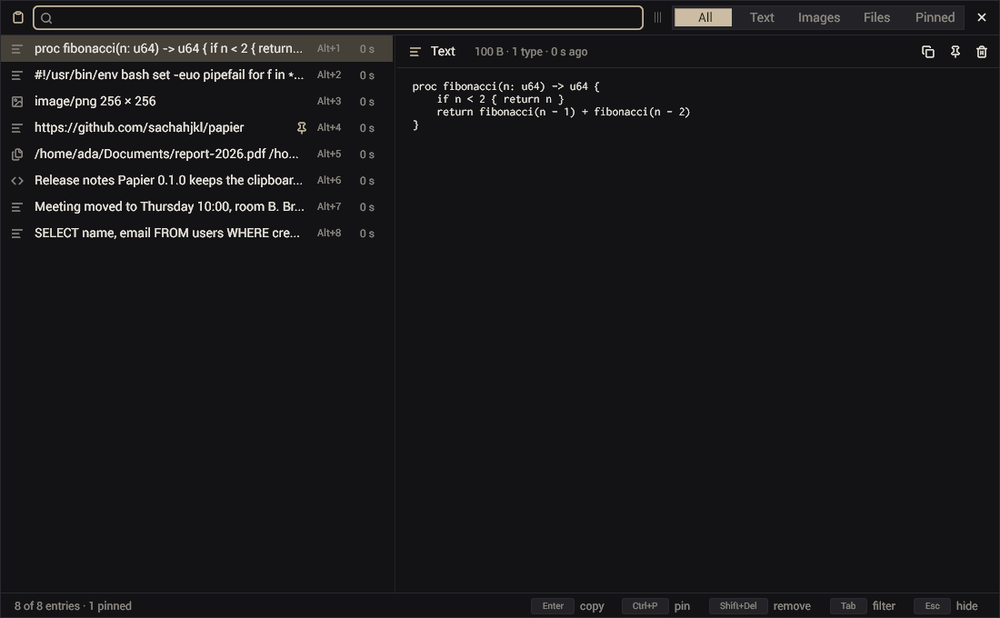
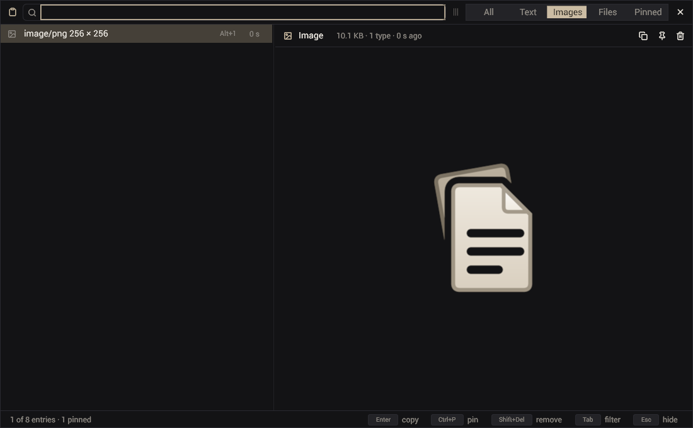
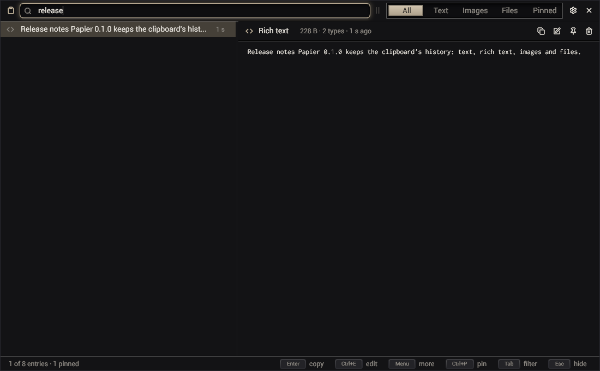
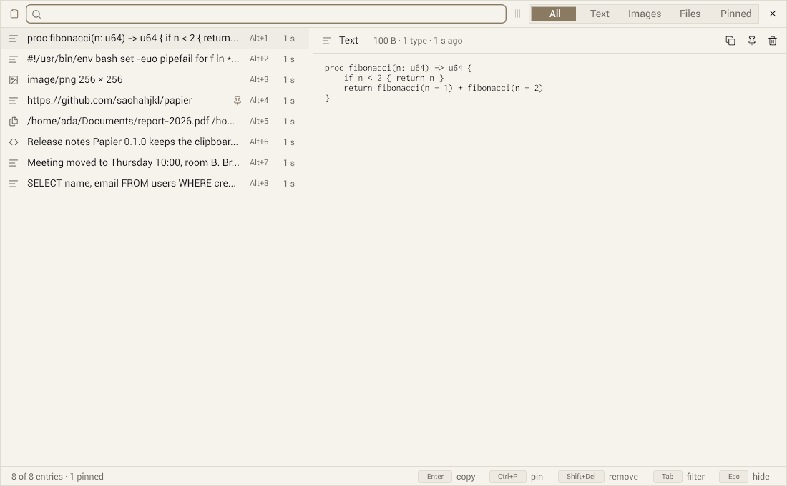

Every kind of copy
Text, the HTML a browser or an editor gives with it, images (PNG, JPEG, WebP, GIF, BMP, SVG) and files copied in a file manager. Put back, an entry offers every type it had, so a rich paste stays rich.

papierA fast clipboard history, searched as you type.
· Nix: nix profile add github:sachahjkl/papier · MIT

Text, the HTML a browser or an editor gives with it, images (PNG, JPEG, WebP, GIF, BMP, SVG) and files copied in a file manager. Put back, an entry offers every type it had, so a rich paste stays rich.
One process for the session, in the notification area. Bind papier toggle to a key: the window comes
up in a few milliseconds, the newest entry selected, the keyboard in the search.
Every word you type narrows the list, case ignored. Tab switches between All, Text, Images, Files and Pinned. Enter puts the entry back; Alt+1 to Alt+9 the first nine.
Ctrl+P pins an entry: it stays whatever the limits of the history, and the Pinned filter lists them.
What a password manager marks as a secret (KeePassXC and others: x-kde-passwordManagerHint) is never
recorded. Types of your own can be left out too.
When the program you copied from quits and the clipboard empties, papier puts the last entry back.
0 % CPU at rest, hidden or shown. The list builds only the rows in view, whatever the length of the history. The same bytes copied twice are stored once.
How many entries, for how long, what to record, the size limit, the primary selection, the colours (its own or one
of twenty palettes), the size of the window and of its text: papier prefs, papier set.
papier list, get, copy, pin, delete,
clear: the history for your scripts, the bytes of an entry on the standard output.



One program for Linux x64. Unpack it and run ./papier install: a launcher in the applications menu,
~/.local/bin/papier, and the start with the session. Needs a Wayland compositor with data-control
(Hyprland, Sway, KDE Plasma, river, niri…), Vulkan, fontconfig.
papier-{{version}}-linux-x64.tar.gz
One program for Windows 10 and 11 (x64). It shows the system's clipboard history, the one Win+V shows, at
Ctrl+Shift+ù. Unzip it and start papier.exe: its Setup installs it, with a launcher in the Start menu, papier
on your PATH, and the start with the session.
papier-{{version}}-windows-x64.zip
The flake builds papier from source with everything it needs: nix run github:sachahjkl/papier, or
add packages.x86_64-linux.default to your configuration.
nix profile add github:sachahjkl/papier
Then bind a key, for Hyprland: bind = SUPER, V, exec, papier toggle. The README says the rest.